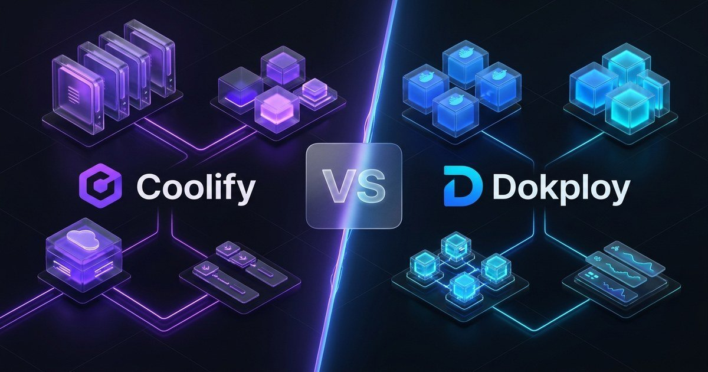
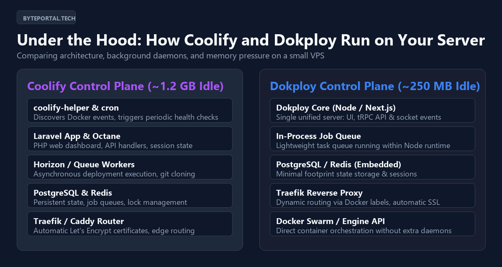

Coolify vs Dokploy: Which self-hosted PaaS wins in 2026?
· 5 min read
A simple side project should not cost $20 per seat every month on Vercel. Nor should it require writing raw Nginx configs and renewal cron jobs via SSH at midnight.
This frustration made self-hosted Platform as a Service (PaaS) tools explode. You rent a $5 virtual private server (VPS), run a single install script, and get automated Git pushes, SSL certificates, and database backups. Two tools dominate this space: Coolify and Dokploy.
Quick Summary (The Short Version)
- • Dokploy wins on small hardware: Its Node.js control plane idles at just 150MB to 350MB of RAM. It runs reliably on entry-level $4 to $5 VPS boxes with 1GB RAM.
- • Coolify wins on ecosystem and multi-server: It offers 300+ one-click application templates, seamless SSH clustering across multiple servers, and flexible reverse proxies (Traefik or Caddy).
- • The deciding boundary: Choose Dokploy if you host side projects or Docker containers on a single budget node. Choose Coolify if you manage multiple servers or rely on turn-key self-hosted software templates.

What both tools actually do
Both Coolify and Dokploy turn a raw Ubuntu Debian server into a personal cloud. You connect your GitHub or GitLab repository, select a branch, and push code. The server builds your Docker image, provisions an HTTPS domain through Let's Encrypt, and monitors container health.
Both tools support Dockerfiles, Docker Compose files, and automated buildpacks like Nixpacks. Both provide web dashboards with live build logs, environment variable editors, and one-click database management for PostgreSQL, MySQL, and Redis.
If you read our deep dive on Dokploy, you know how liberating this workflow feels. The real difference is not what they promise. It is how much server hardware they consume to keep those promises.

The $5 VPS test: memory and idle footprint
Memory efficiency is where the two tools split immediately. Most budget VPS plans from Hetzner, DigitalOcean, or Linode come with 1GB or 2GB of RAM.
Coolify v4 is built on PHP and Laravel. Its control plane runs Laravel Octane, Horizon background queue workers, a dedicated PostgreSQL database, Redis, a helper daemon, and Traefik. At idle, Coolify consumes between 800MB and 1.4GB of RAM.
On a 1GB VPS, running Coolify without configured swap memory will cause the Linux Out-Of-Memory (OOM) killer to terminate your processes during the first Docker build. To run Coolify smoothly, you need at least a 2GB RAM server, or you must add 2GB to 4GB of disk swap.
Dokploy is built on Node.js, Next.js, and tRPC. Its web interface, background tasks, and API run inside a unified lightweight process. Dokploy idles at 150MB to 350MB of RAM.
That means Dokploy leaves 70% of a 1GB VPS free for your actual applications, Postgres instances, and API containers.
Feature comparison matrix
Beyond memory, their operational workflows differ in several key areas:
| Feature | Coolify v4 | Dokploy |
|---|---|---|
| Idle RAM Usage | 800MB – 1.4GB | 150MB – 350MB |
| Multi-Server Support | Native SSH agent clustering | Docker Swarm mode |
| One-Click Catalog | 300+ templates | Essential services & DBs |
| Reverse Proxy Choice | Traefik or Caddy | Traefik (integrated) |
| Git Integrations | GitHub, GitLab, Bitbucket, Custom Git | GitHub, GitLab, Custom Git |
| License | Apache 2.0 (Open Source) | Apache 2.0 (Open Source) |
Multi-server management and clustering
If you outgrow a single server, Coolify has a clear advantage. Its control plane lets you register external servers via standard SSH keys. Coolify dials into the remote host, installs Docker, deploys containers, and routes traffic without complex network overlays.
Dokploy approaches scaling using Docker Swarm. You can join worker nodes to a Swarm cluster and distribute services across machines. While functional, Swarm introduces overlay networking rules and firewall considerations that single-node developers often prefer to avoid.
The install command for both
Both platforms install via an automated shell script. On a clean Ubuntu 22.04 or 24.04 LTS instance, you run one command:
For Coolify:
curl -fsSL https://cdn.coollabs.io/coolify/install.sh | bashFor Dokploy:
curl -sSL https://dokploy.com/install.sh | shOnce completed, Coolify opens at port 8000 and Dokploy opens at port 3000. Both scripts automatically install Docker engine and bootstrap their reverse proxies.
What breaks at 2 a.m.
Neither tool eliminates operations. When things fail, the failure modes look different:
1. Build memory exhaustion on Coolify: Building a modern Next.js or Rust application consumes massive memory during Webpack or rustc compilation. If Coolify is already using 1GB of RAM, an unconstrained build will freeze your entire server. Always configure swap before your first deployment.
2. Traefik label desynchronization on Dokploy: If you manually edit Docker container ports or labels outside Dokploy, Traefik can lose routing rules, resulting in 404 or 502 Bad Gateway errors. Stick to Dokploy's web dashboard or Compose editor for route changes.
3. Database volume persistence: Both platforms store databases in Docker named volumes or host directory mounts. If you recreate containers without backup targets, you risk losing production data. Configure automated S3 database backups immediately after setting up your first project.
Frequently Asked Questions
Can I migrate projects between Coolify and Dokploy?
Yes. Because both platforms run standard Dockerfiles and Docker Compose files, your application code remains vendor-independent. You only need to export your environment variables and database dumps.
Do either of these tools take a percentage of my server traffic?
No. Both platforms are 100% self-hosted on your own infrastructure. All web traffic flows directly from your reverse proxy to your containers without passing through any external cloud gateway.
Can I run WordPress, Plausible, or n8n with one click?
Coolify includes more than 300 pre-configured templates for popular self-hosted software. Dokploy includes the most common databases and open-source applications, but requires manual Docker Compose files for niche tools.
What they are not
- Not managed cloud hosting. You are responsible for OS security patches, firewall rules, and uptime monitoring.
- Not Kubernetes. Neither tool is designed for massive auto-scaling clusters spanning hundreds of nodes.
- Not a zero-maintenance setup. Backups, disk volume cleanup, and Docker image pruning remain your responsibility.
The takeaway
If you want to host personal apps, client websites, or APIs on a single $4 or $5 VPS with 1GB of RAM, choose Dokploy. It is fast, lightweight, and preserves your precious memory for actual workloads.
If you run a 2GB+ server, want to deploy from a library of 300+ open-source templates, or manage multiple separate VPS boxes from one dashboard, choose Coolify.
This weekend, spin up an inexpensive test instance, run either install script, and deploy one Git repository. You will never look at a $20 per-seat SaaS hosting invoice the same way again.
Links: Coolify, Coolify GitHub, Dokploy, Dokploy GitHub, and our Dokploy setup guide.
Hands-on comparison: both control planes tested on identical Hetzner Cloud VPS instances (CPX11, 2 vCPU, 2GB RAM and CX22, 2 vCPU, 4GB RAM) with Docker 27.